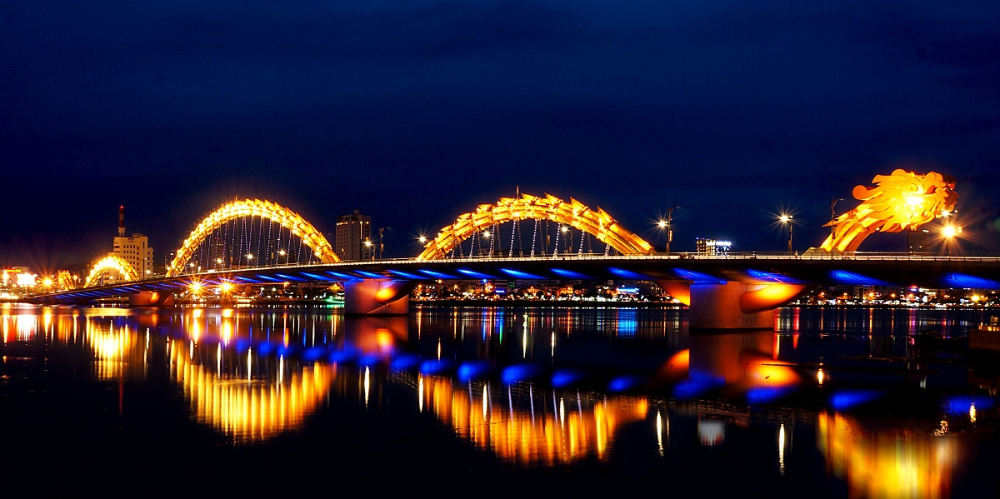

DRAGON BRIDGE
CẦU RỒNG

The Dragon Bridge is a bridge over the River Hàn at Da Nang, Vietnam.
Construction of the bridge began on 19 July 2009 (the same day as the inauguration of the nearby Thuận Phước Bridge) when the former Prime Minister of Vietnam Nguyen Tan Dung and many high-ranking government officials attended the groundbreaking ceremony.
Dragon Bridge is 666m long, 37.5m wide and has six lanes for traffic. It opened to traffic on March 29, 2013, at a cost of nearly VND 1.5 trillion dong (US$88m).The bridge was designed by the US-based Ammann & Whitney Consulting Engineers with Louis Berger Group. Construction was undertaken by Company No. 508, an affiliate of Civil Construction Engineering Corporation No.5, and Bridge Company No. 75.
This modern bridge crosses the Han River at the Le Dinh Duong/Bach Dang traffic circle, providing the shortest road link from the Da Nang International Airport to other main roads in Da Nang city, and a more direct route to My Khe Beach and Non Nuoc Beach on the eastern edge of the city. The bridge was designed and built in the shape of a dragon and to breathe fire and water each Saturday and Sunday night at 9PM.